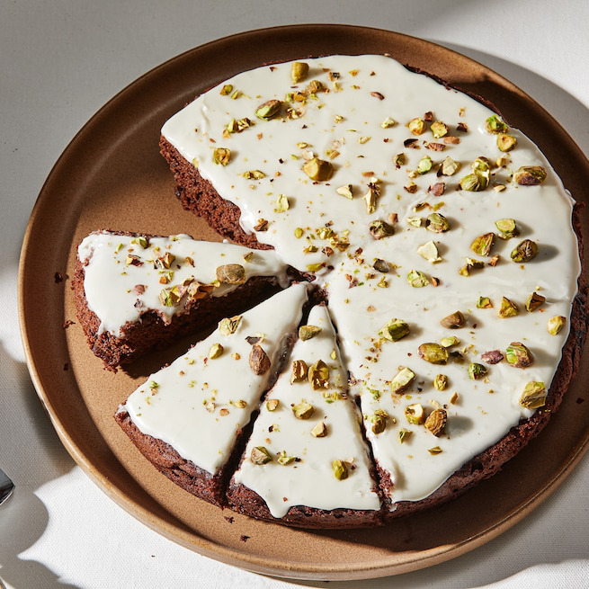

Cocoa Yogurt Cake

Description
Afternoon tea should have a chocolate treat. Next time, I am going to try this chocolate cake recipe from one of my favorite cookbooks, "Snacking Cakes" by Yossy Arefi. (Her website is Apt. 2B Baking Co.) I've made several of the other recipes in the book. I like that they are easy to prepare and that the cakes are not too sweet (hence, "snacking" cakes). They are also very tasty and often have interesting flavor or texture combinations. (A good example of this is her Nectarine and Cornmeal Upside-Down Cake recipe.)
Arefi describes this cake as "the most bang-for-your-buck chocolate cake I've ever made." I'm sold!
Ingredients
Cake
- 1 cup light brown sugar
- 2 large eggs
- 1 cup plain whole-milk yogurt
- ½ cup neutral oil, like canola or grapeseed
- 1 teaspoon vanilla extract
- ¾ teaspoon kosher salt
- ¾ cup unsweetened Dutch-process cocoa powder
- 1 cup all-purpose flour
- 1 teaspoon baking powder
- ½ teaspoon baking soda
- ½ cup chopped chocolate or chocolate chips (optional)
Glaze
- 1 cup confectioners' sugar
- 3 tablespoons unsweetened Dutch-process cocoa powder
- 1 tablespoon unsalted butter, very soft
- Pinch of salt
- 2 to 3 tablespoons boiling water
- 2 to 3 tablespoons crushed pistachios
Steps
Cake
-
Position a rack in the center of your oven and preheat the oven to 350°F. Butter or coat an 9-inch round baking pan with nonstick spray. Line the pan with a strip of parchment paper that hangs over two of the edges.
-
In a large bowl, whisk the brown sugar and eggs until pale and foamy, about 1 minute. Add the yogurt, oil, vanilla, and salt. Whisk until smooth and emulsified. Add the cocoa powder and whisk until well-combined and smooth.
-
Add the flour, baking powder, and baking soda and whisk until well-combined and smooth. Fold in the chocolate, if using.
-
Pour the batter into the prepared pan, tap the pan gently on the counter to release any air bubbles, and smooth the top of the batter with an offset spatula.
-
Bake the cake until puffed and a tester inserted into the center comes out clean, 35 to 45 minutes. Set the cake on a rack to cool for about 15 minutes. Then use the parchment paper to lift the cake out of the pan and set it on the rack to cool completely.
Glaze
-
Add the confectioners' sugar and cocoa to a bowl. Whisk until combined and any lumps in the cocoa have been broken up. Add the butter, salt, and 2 tablespoons boiling water and quickly whisk until smooth. If the glaze is very thick, add a few drops of water until it has a smooth and pourable consistency.
-
Immediately pour the glaze over the cooled cake (the glaze will harden to a more spreadable rather than pourable consistency if you let it sit). Sprinkle the chopped pistachios over the top. Let the glaze set for about 20 minutes before slicing the cake.)